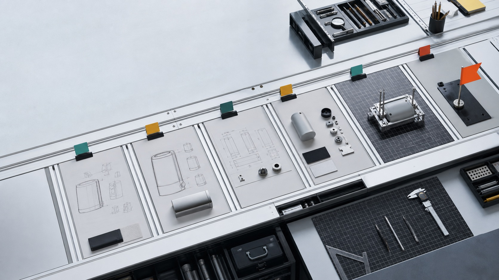

Progressive loading
The agent reads the core contract, project memory, selected workflow, active Runtime, and only the standards that apply.

Open source / Alpha
A development studio, encoded for AI agents.
Bring a product request. Studio OS gives your agent a disciplined path through discovery, architecture, interface design, implementation, validation, QA, and release.
Vendor-neutral. Project-local. No npm required at runtime.
From request to evidence
What it is
Studio OS is an instruction-driven operating layer for AI agents with filesystem access. It turns an open-ended request into a sequence of explicit decisions, project artifacts, working increments, and quality evidence.
Each Runtime owns one job and one stop condition. The agent asks, recommends, builds, or verifies only when that stage requires it.
Studio OS does not replace the AI host or hide work in a remote service. It guides the host agent and keeps accepted decisions in the project repository.
Entry paths
Studio OS detects the project mode, then composes the right workflow for the product and the current work item.
A new product moves from problem understanding to verified outcome.
Once the project exists, work routes independently:
How it works
The Loader selects one workflow and one active Runtime. Relevant standards and project memory join only when the stage needs them.
The agent reads the core contract, project memory, selected workflow, active Runtime, and only the standards that apply.
Accepted scope, architecture, design-system evidence, status, and quality reports stay in project-local Markdown artifacts.
Passing implementation tests is not enough to call an MVP ready. Validation, QA, Product Outcome, and Release have separate gates.
Interaction layer
The strategy is inferred from observable behavior and can change as the conversation changes. You never have to configure a mode.
Recommends a clear approach, explains briefly, and reduces decision load.
Makes trade-offs visible and treats challenges as part of the decision.
Implements the accepted change directly and keeps discussion focused.
Delivery standards
Architecture chooses technology for product fit and long-term delivery. Brownfield projects preserve evidence from the existing stack and design system. Quality gates still apply across every platform.
Goals, constraints, current code, operations, and interface evidence.
Architecture, security, accessibility, testing, platform, and stack rules.
Implementation evidence remains separate from product readiness.
Install
Install the packaged plugin for Codex or Claude Code, or use the universal Bootstrap with another filesystem-capable agent.
Add the GitHub marketplace, then install Studio OS:
codex plugin marketplace add Aleksei2507/studio-os
codex plugin add studio-os@studio-os
Start a new Codex session, then use Use Studio OS with a product request.
Add the GitHub marketplace, install Studio OS, then reload plugins:
/plugin marketplace add Aleksei2507/studio-os
/plugin install studio-os@studio-os
/reload-plugins
Start with /studio-os:studio-os, then add your product request.
Download the latest release archive, verify its checksum, extract it, and give the agent this entry contract:
Read and follow <studio-os-root>/adapters/universal/BOOTSTRAP.md.
Use Studio OS.
I want to build...
The release archive contains the Runtime core. It does not require npm at runtime.
Questions
The host AI agent performs the work. Studio OS supplies the workflow, stage boundaries, decision contracts, standards, and quality gates that keep that work coherent.
No. Codex and Claude Code have packaged adapters. Other agents with filesystem access can enter through the universal Bootstrap included in each release.
Not by default. Brownfield onboarding records evidence from the current codebase and interface system so later stages can preserve or deliberately revise accepted constraints.
Studio OS is currently alpha software. Its contracts and regressions are actively evolving, so use versioned releases and review project decisions.